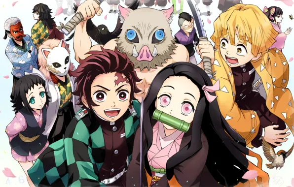

Demon Slayer (Kimetsu no Yaiba)
2019 - Atual | Ação, Fantasia, Drama, Shounen
Por que está aqui?
Demon Slayer me conquistou desde o primeiro episódio.
A ligação entre os irmãos Tanjiro e Nezuko me tocou profundamente, e a forma como o anime combina beleza visual com dor emocional é simplesmente única.
É uma obra que exala empatia, honra e superação.